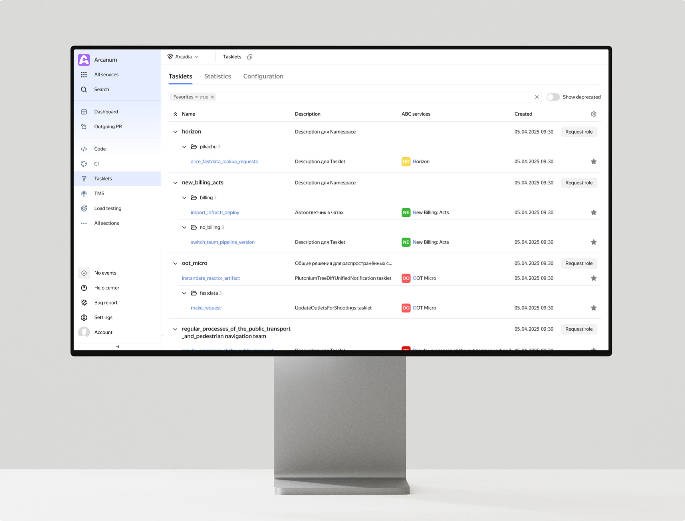
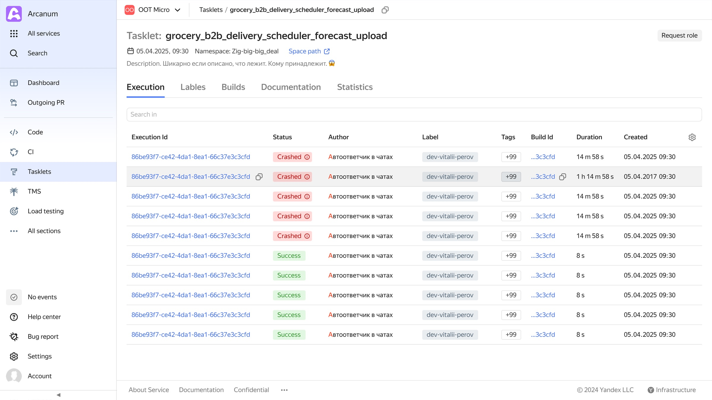
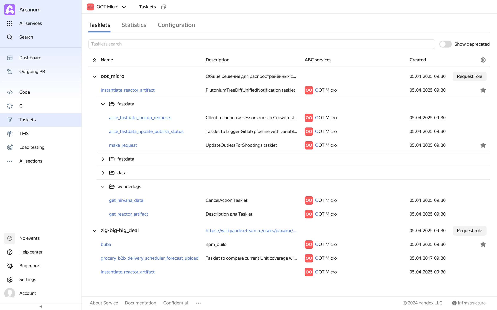
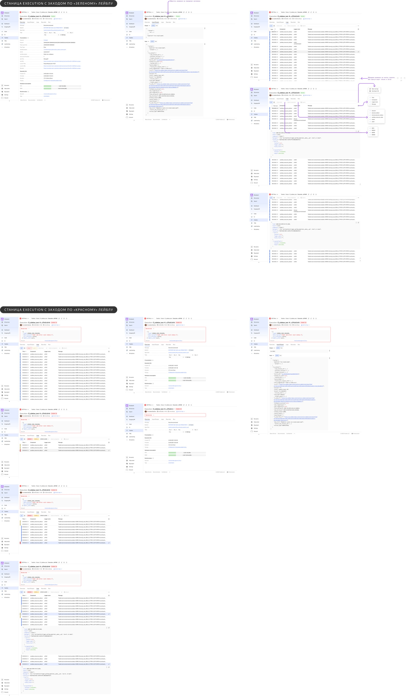

−2 клика
в главном сценарии для 96% пользователей
- Как нашли
- Тепловая карта показала, что старт сценария выстроен неверно.
- Оговорка
- Клики — прокси. Рядом они переведены во время, потому что разработчика интересуют секунды.
Яндекс · DevTools · внутренний сервис
Tasklets — сервис асинхронного запуска кода, которым пользуются более 11 000 разработчиков Яндекса. Его нужно было перенести в единый портал разработчика Arcanum. Я использовал переезд, чтобы перестроить вход в сервис вокруг самого частого сценария.
Яндекс собирает инструменты разработчика в единый портал Arcanum. Tasklets жил отдельно, со своими паттернами интерфейса.
36 интервью, 7 проверенных гипотез, анализ тепловой карты, перенос на паттерны Arcanum, новая точка входа и упрощение экрана логов.
Стартовым экраном сделать сценарий, ради которого приходят 96%, вместо ярлыка поверх старой навигации.
−2 клика в главном сценарии для 96% пользователей — 3–10 секунд на каждом запуске.

01 · Результаты
в главном сценарии для 96% пользователей
экономии на каждом запуске
гипотез проверено
приходят в сервис с одной и той же целью
02 · Контекст и задача
Самый быстрый путь — перенести экраны один к одному и перекрасить их под Arcanum. Я предложил сначала провести исследование: переезд — редкий момент, когда навигацию можно поменять без сопротивления привычки.
03 · Исследование
Открыть свой тасклет и посмотреть последние запуски. Обзор и настройки открывали редко.
Что это значит для дизайна
Стартовый экран — список запусков, а не обзор сервиса. Остальное доступно в соседних вкладках.
Чтобы найти причину ошибки, разработчик пролистывает служебную информацию, которая нужна в редких случаях.
Что это значит для дизайна
Статус Crashed на первом плане, ID запуска сразу ведёт к логу, второстепенные поля свёрнуты.
Собственные паттерны Tasklets заставляли переключаться: таблицы, фильтры и действия работали иначе, чем в соседних сервисах портала.
Что это значит для дизайна
Перенос на паттерны Arcanum без исключений, даже там, где старое решение было локально удобнее.
Как я рассуждал
Переезд — редкое окно, чтобы поменять навигацию. Обычно смена точки входа упирается в привычку. Но когда сервис всё равно переезжает в новый портал, люди ждут изменений. Перенести экраны один к одному было бы упущенной возможностью.
Тепловая карта сказала «что», интервью — «почему». Карта показала, что почти все сразу уходят с обзора к списку запусков. Интервью объяснили причину: разработчик приходит не «посмотреть сервис», а проверить свой последний запуск. Этот сценарий и стал точкой входа.
Путь большинства — без ущерба для меньшинства. 4% пользователей нужен обзор. Вместо компромиссного экрана «для всех» я сделал вход для 96%, а для остальных — запоминание последней открытой вкладки.
04 · Развилки
05 · Решение

Экран запусковТеперь открывается сразу

Список тасклетовВ навигации портала

Экран запуска и логаИтерации упрощения
06 · Ретроспектива
Клики легко посчитать, но это прокси. Время до первого целевого действия точнее показывает эффект и понятнее бизнесу.
Пользователей, которым нужен обзор, я учёл запоминанием вкладки, но не опросил отдельно после запуска.
Главный вывод: в инструментах разработчика самое ценное — не новые функции, а убранные шаги в сценарии, который повторяется сотни раз в день. Переезд был поводом это сделать.
Другие кейсы
Контакты
Ищу роль Senior Product Designer. Расскажу на звонке, как считал эффект и что не вошло в кейс.